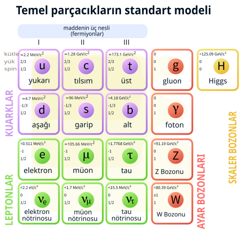

Parçacık fiziği (yüksek enerji fiziği olarak da bilinir), maddeyi ve ışınımı oluşturan parçacıkların doğasını araştıran bir fizik dalıdır. Parçacık kelimesi birçok küçük nesneyi andırsa da, parçacık fiziği genellikle gözlemlenebilen, indirgenemez en küçük parçacıkları ve onların davranışlarını anlamak için gerekli temel etkileşimleri araştırır. Şu anki anlayışımıza göre bu temel parçacıklar, onların etkileşimlerini de açıklayan kuantum alanlarının uyarımlarıdırlar. Günümüzde, bu temel parçacıkları ve alanları dinamikleriyle birlikte açıklayan en etkin teori Standart Model olarak adlandırılmaktadır. Bu yüzden günümüz parçacık fiziği genellikle Standart Modeli ve onun olası uzantılarını inceler. Atomaltı parçacıklar bağımsız olarak ömürleri çok kısa olduğu için normal şartlar altında gözlemlenemezler. Bu amaçla oluşturulan parçacık hızlandırıcı denilen dev düzeneklerde, yüksek elektriksel alan etkisi ile hızlandırılmış parçacıkların manyetik alan etkisi ile odaklanarak çarpıştırılması ile ortaya çıkan farklı parçacıklar incelenebilir hale getirilmeye çalışılır. Bu işlemlerin yapılmasında ve yaratılan çarpışmalarda ortaya çıkan enerji miktarları çok büyük olduğundan parçacık fiziği yüksek enerji fiziği olarak da adlandırılır. Parçacıkları ve etkileşimlerini açıklayan en güncel kurama Standart Model adı verilir.
